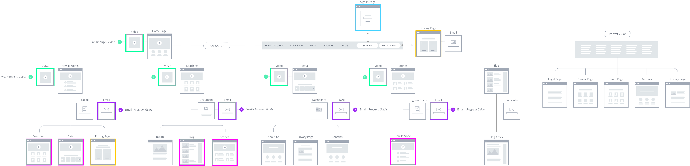

The problem
A new health and wellness company developed lifestyle plans based on a person’s genome, blood markers, stress hormones and gut microbiome, priced at $3,000 with a one-year commitment.
Originally focused on wellness programs for large organizations, the company wanted to enter the consumer market but struggled to acquire consumers, with an acquisition cost over $200 across 12 different touchpoints.
The solutionAn updated value proposition on a redesigned website focused on health and wellness content as a lead generation tool.
Team & role
The team
- 1 project manager
- 1 copywriter
- 3 dev
- 1 product designer 👋
User research
- Focus group research
- User interviews
- Mapping user journey
- Market research
Designing
- Wireframing
- Information architecturing
- High-fidelity mockups
- Style guide
Background
To re-evaluate the value proposition for a shift from B2B to B2C, I led a research initiative testing three different value propositions with focus groups.
Site audit
Beyond sharper messaging, the focus groups showed the best site would be an information hub, housing health content and wellness articles that are searchable on the web. I redesigned the site structure around that goal.

Get the full story
Learn more about this redesign process and hear some surprising takeaways from the user research. The full, unedited case study is available on request.